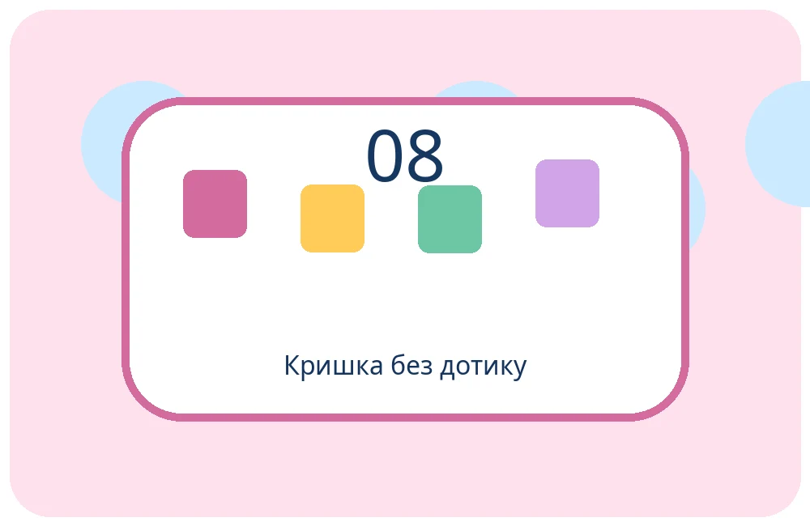

Кришка без дотику
Історія 8. Відкриваємо ресурси.
🎯 Ситуація

Біля класу стоїть контейнер із кришкою. Після прогулянки діти хочуть викинути папір, але торкатися кришки брудними руками незручно. Поруч уже є ноги, підлога та деталі контейнера.
❓ Ваше завдання
ІКР: кришка відкривається без дотику руками. Пригадайте властивості й функції деталей. Які ресурси вже є поруч і можуть передати рух кришці?
🧩 Спробуйте!
Оберіть дві ідеї, які наближають до бажаного результату. Перетягніть картки або натисніть на них. Поясніть свій вибір.
🧺 Ваші ідеї: Поки порожньо
🧪 Маленький дослід
Перевірте дві ідеї на безпечній моделі. Спершу передбачте результат, потім порівняйте: яка ідея краще виконує потрібну функцію?
✏️ Ваш винахід
Назвіть два наявні ресурси та поясніть, як вони допоможуть відкрити кришку без рук.